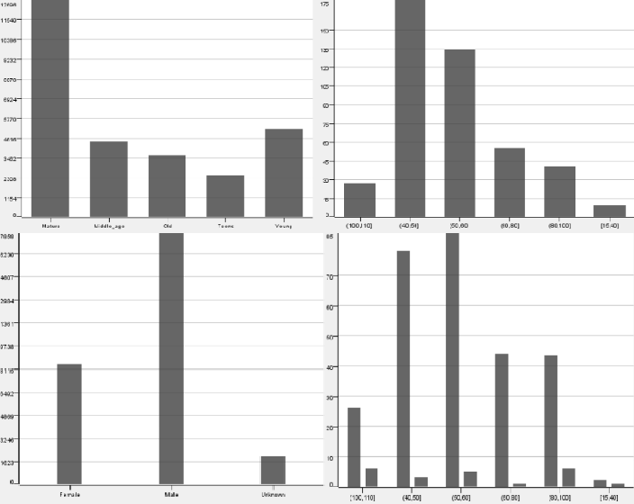

Accident Prediction in SA
Focusing on road accidents in South Australia, this model predicts the accident risk.
Accident Prediction in SA
Supervised Machine Learning Project: Accident Prediction in South Australia
This project was focused on the road accidents in South Australia. A model to predict the severity of an accident for a location based on several parameters like road type, Alcohol contains, Drugs, Gender, Weather, Age, etc. The primary goal was to reduced the road accidents by providing data to the local authorities and decision makers. This information is useful for tourist and local pedestrians to comprehend the location in a better way and ensure safety measure while travelling.
The database used is from data.sa (open source govt. website) data uploaded is to track region wise past accidents.
Data Exploration
Let's start with importing the necessary libaries, reading in the data, and checking out the dataset.
# Importing the libraries
import numpy as np
import matplotlib.pyplot as plt
import pandas as pd
from sklearn.preprocessing import StandardScaler
from sklearn.model_selection import train_test_split
from keras.models import Sequential
from keras.layers import Dense
# Importing the dataset
dataset = pd.read_csv('2017_DATA_SA_Crash_ANN.csv')
X = dataset.iloc[:, [1,5,14,19,20,21,22,29,24,11,8]].values
y = dataset.iloc[:, 26].values
The data set consists of some parameters based on which I have prepared a model to predict the road accidents
Preparing Data
Prior using the data for machine learning algorithms, it often must be cleaned, normalised or formatted — this is known as data preprocessing. As this dataset was uploaded on the government website to keep a track of the previous accidents the data was pretty much clean and normalised only certain location names were to be adjusted. This preprocessing can help with the outcome and predictive capability of almost all types of learning algorithms.
labelencoder_X_1 = LabelEncoder()
X[:, 0] = labelencoder_X_1.fit_transform(X[:, 0])
labelencoder_X_2 = LabelEncoder()
X[:, 1] = labelencoder_X_2.fit_transform(X[:, 1])
labelencoder_X_3 = LabelEncoder()
X[:, 3] = labelencoder_X_3.fit_transform(X[:, 3])
labelencoder_X_4 = LabelEncoder()
X[:, 4] = labelencoder_X_4.fit_transform(X[:, 4])
labelencoder_X_5 = LabelEncoder()
X[:, 5] = labelencoder_X_5.fit_transform(X[:, 5])
labelencoder_X_6 = LabelEncoder()
X[:, 6] = labelencoder_X_6.fit_transform(X[:, 6])
labelencoder_X_7 = LabelEncoder()
X[:, 7] = labelencoder_X_7.fit_transform(X[:, 7])
labelencoder_X_8 = LabelEncoder()
X[:, 8] = labelencoder_X_8.fit_transform(X[:, 8])
labelencoder_X_9 = LabelEncoder()
X[:, 9] = labelencoder_X_9.fit_transform(X[:, 9])
labelencoder_X_10 = LabelEncoder()
X[:, 10] = labelencoder_X_10.fit_transform(X[:, 10])
Sklearn provides a very efficient tool for encoding the levels of categorical features into numeric values. LabelEncoder encode labels with a value between 0 and n_classes-1 where n is the number of distinct labels.
onehotencoder = OneHotEncoder(categorical_features =[0])
X = onehotencoder.fit_transform(X).toarray()
X = X[:, 0:]
Split the data
As the data has now been converted to categorical values it's time to split the dataset into train and test
X_train, X_test, y_train, y_test = train_test_split(X, y, test_size = 0.2, random_state = 0)
sc = StandardScaler()
X_train = sc.fit_transform X_train
X_test = sc.transform X_test
Evaluate model performance
In this section I have compared two models Support Vector Machines (SVM) and Artificial Neural Networks (ANN)
Support Vector Machines (SVM)
Support Vector Machines is similarly one of the most used machine learning algorithms as this can be used with both regression and classification problems. As a result, it is mostly used with the classification problem. In this algorithm the points have been plotted in an n-dimension space with the value of each attribute is being the value for each coordinate. Post the plotting the classification is performed by finding the hyperplane that can differentiate between classes as well. As feature scaling is most important for most of the machine learning models as they are all dependent on the Euclidian distance, as the severity has much higher values as compared to the categorical values it will highly dominate the Euclidian distance and based on this dataset the classifier has been run in the following way.
X_train, X_test, y_train, y_test = train_test_split(X, y, test_size = 0.2, random_state = 0)
sc = StandardScaler()
X_train = sc.fit_transform X_train
X_test = sc.transform X_test
from sklearn.svm import SVC
classifier = SVC(kernel = 'linear', random_state = 0)
classifier.fit(X_train, y_train)
Confusion matrix and predictions
y_pred = classifier.predict(X_test)
from sklearn.metrics import confusion_matrix
cm = confusion_matrix(y_test, y_pred)
from sklearn.metrics import confusion_matrix, classification_report
cm = confusion_matrix(y_test, y_pred)
print(classification_report(y_test,y_pred))
Boxplot visualisation (Gender casuality type vs Age)
Artificial Neural Networks (ANN)
The main intention of artificial neural networks is to find the approximation of an unknown function. This is done by having some layers of neurons which work on each other’s output where the neurons from a layer closer to the output and use the output from the previous layers.
# Initialising the ANN
classifier = Sequential()
# Adding the input layer and the first hidden layer
classifier.add(Dense(output_dim = 9, init = 'uniform', activation = 'relu', input_dim = 13))
# Adding the second hidden layer
classifier.add(Dense(output_dim = 9, init = 'uniform', activation = 'relu'))
# Adding the output layer
classifier.add(Dense(output_dim = 5, init = 'uniform', activation = 'sigmoid'))
# Compiling the ANN
classifier.compile(optimizer = 'adam', loss = 'categorical_crossentropy', metrics = ['accuracy'])
# Fitting the ANN to the Training set
from keras.utils import to_categorical
y_train = to_categorical(y_train)
classifier.fit(X_train, y_train, batch_size = 10, epochs = 100)
# Predicting the Test set results
y_pred = classifier.predict(X_test)
y_pred = (y_pred > 0.5)
# Making the Confusion Matrix
from sklearn.metrics import confusion_matrix
cm = confusion_matrix(y_test, y_pred)
ANN model training
Evaluation
Artificial Neural Networks as it gives a better prediction of results along with the highest accuracy on the predicted data. Using appropriate number of input, output and hidden layers and the appropriate loss function. The loss function and the number of layers has been changed and tested but increasing the number of layers wouldn’t affect the prediction of the accurate results or accuracy but decreasing the number of layers drastically reduced the accuracy and increased the loss.
Automatic License Plate Detection
Object detection and image classification to reognise the characters on the license plate.
Automatic License Plate Detection
Webots - Autonomous Bots
An autonomous bot to
Webots - Autonomous Bots
Card title
Some quick example text to build on the card title and make up the bulk of the card's content.
Modal title
Card title
Some quick example text to build on the card title and make up the bulk of the card's content.
Modal title
Card title
Some quick example text to build on the card title and make up the bulk of the card's content.